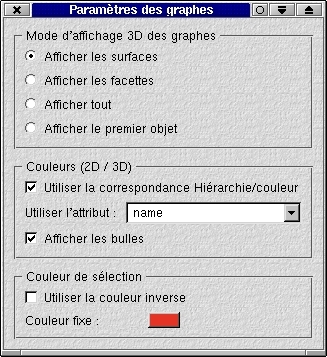

|
Anatomist: Manipulation de données structurées
|
 |
Graphes
Browsers
Visualisation de graphes:
Graphes "bruts"
Graphes identifiées
et hiérarchie
Trucs et recettes
Notes
-
La manipulation de graphes et de données structurées dans
Anatomist est relativement peu automatisée, les opérations
peuvent sembler complexes, mais c'est ainsi: n'en demandez pas trop...
-
Je n'explique pas tout ici, seulement les trucs les plus utiles pour les
utilisations courantes
Graphes
Fichiers .arg
-> graphes de sillons
-> graphes d'activations (de clusters)
-> graphes de régions d'intérêt
...
Les graphes sont chargeables dans Anatomist en tant qu'objets.
Ils n'apparaissent pas directement dans les fenêtres (2D / 3D)
Ils ont une structure et des sous-objets: noeuds et relations
NE PAS METTRE DIRECTEMENT LES
NOEUDS DE GRAPHE DANS LES FENETRES
Sinon on perd tous les avantages du système de manipulation
structurelle
Browsers
Un "browser" est un type de fenêtre particulier dans Anatomist, qu'on
peut ouvrir comme toutes les autres par le menu "fenêtres" ou l'icône
correspondante de la fenêtre de contrôle.
C'est une fenêtre non graphique: elle affiche les informations
sous forme de texte.
Elle a été faite spécialement pour afficher la
structure des graphes et des hiérarchies de noms.
Visualisation des graphes:
Visualisation de graphes "bruts"
J'appelle ici "graphe brut" un graphe dont les noeuds n'ont pas de nom
distinctif qui permet de les reconnaitre et de les associer à une
couleur particulière.
On visualise toujours un graphe avec l'anatomie qui lui correspond
(IRM en 2D ou triangulation du cerveau en 3D). En fait il est possible
de mettre un graphe seul dans une fenêtre 3D (c'est fortement déconseillé
en 2D) pour observer par ex. les formes des sillons sous tous les angles,
mais dans ce cas on utilise généralement 2 fenêtres,
une avec l'anatomie et l'autre sans, puisque la sélection en cliquant
sur l'image requiert l'anatomie.
J'appelle "fenêtre graphique" une fenêtre de visualisation
graphique: 2D (axiale, sagittale, coronale) ou 3D, par opposition aux fenêtres
browser.
Charger l'anatomie (triangulation .tri ou .mesh, ou IRM .ima, .vimg ou
.img)
Charger le graphe dans Anatomist
Ouvrir la ou les fenêtres graphiques (2D / 3D)
Mettre l'anatomie et le graphe dans les fenêtres graphiques (on ne
voit que l'anatomie, le graphe est invisible)
Passer les fenêtres graphiques en mode "selection" (il faut le faire
fenêtre par fenêtre)
On visualise les noeuds d'un graphe en les sélectionnant, plusieurs
méthodes de sélection sont possibles:
Mode "de base"
Pour voir les éléments du graphe situés à une
position donnée, cliquer sur l'anatomie à l'endroit voulu
(en mode de sélection), les éléments du graphe situés
à cet endroit apparaissent.
L'élément sur lequel on clique est "sélectionné":
il apparait avec une couleur différente, prédéfinie.
Sélection:
On peut sélectionner des noeuds sans désélectionner
ceux qui le sont déjà en cliquant sur un noeud non sélectionné
tout en maintenant la touche "Ctrl" ou "Shift" enfoncée.
On peut déselectionner un noeud sélectionné en
cliquant dessus tout en maintenant la touche "Ctrl" enfoncée.
Opérations sur les noeuds sélectionnées:
Quand un ou plusieurs noeuds sont sélectionnés, le bouton
droit de la souris ouvre un menu dans lequel plusieurs opérations
sont proposées:
View / Select objects: ouvre une fenêtre "browser" contenant
les objets sélectionnées. Rarement utile, voir plus loin
pour la manipulation des browsers.
Unselect: déselctionne tous les noeuds
Select all: sélectionne tous les objets présents dans
la fenêtre (y compris l'anatmie!), à utiliser très
rarement en principe.
Remove from windows of this group: retire les objets sélectionnés
de toutes les fenêtres de ce groupe de fenêtres. C'est normalement
de cette façon qu'on retire les noeuds qu'on ne veut plus voir pour
ne pas encombrer la visualisation.
Remove from this window: enlève les objets seulement de la
fenêtre dans laquelle cette action est demandée.
Object manipulations: reproduit, pour les objets sélectionnés
dans les vues, le menu correspondant de la fenêtre de contrôle
d'Anatomist (qui lui agit sur les objets sélectionnés dans
la fenêtre de contrôle uniquement). Il permet par ex. de modifier
la couleur des noeuds choisis etc.
Select neighbours: affiche et sélectionne les noeuds voisins
dans le graphe. Très utile pour explorer une région sans
"rater" un noeud.
Select nodes of attribute: permet d'effectuer des recherches et
sélections sur un critère d'attribut de noeud (nom...)
Mode "browser"
Ouvrir un browser
Mettre le graphe dans le browser
Ouvrir dans le browser le graphe, ouvrir aussi "graph nodes": la liste
des noeuds apparait
Cliquer sur un noeud: il apparait et se sélectionne alors dans toutes
les fenêtres contenant le graphe
Visualisation de graphes de données
identifiées en relation avec une hiérarchie de noms
Ces graphes possèdent sur chacun de leurs noeuds un attribut "name"
ou / et "label" qui leur donne un nom
Les noms utilisés correspondent normalement à une nomenclature
connue (activations, sillons, ...)
La nomenclature correspondante peut être chargée dans
un objet "hiérarchie" (fichiers .hie). Les objets hiérarchie
ne sont pas représentable dans les fenêtres de visualisation
classiques 2D et 3D, mais seulement dans un browser.
On utilise en principe l'attribut "name" pour des noms données
manuellement, et "label" pour une identifaction automatique (sillons).
Charger la hiérarchie dans Anatomist
Ouvrir un browser
Mettre la hiérarchie dans le browser
Ouvrir la fenêtre de paramètres des graphes (accessible depuis
la petite fenêtre de contrôle AnaQt par le bouton "Graph parameters")
Cocher l'onglet "Use hierarchy / color bindings"
Si on souhaite une sélection par attribut "label" plutôt que
"name", changer la sélection dans "Use attribute"
On peut aussi autoriser l'affichage des bulles montrant les noms des noeuds
quand on pointe sur l'image en cochant l'onglet "Display ToolTips". Cela
n'est valable que pour les fenêtres de visu déjà ouvertes
au moment où on coche cet onglet. Pour des fenêtres ouvertes
ensuite, il faut revenir aux paramètres de graphe et re-cocher cette
case.

Dans le browser contenant la hiérarchie, ouvrir la hiérarchie
de manière à voir les noms voulus
Cliquer sur un nom: les noeuds correspondants s'afichent dans les fenêtres
et sont sélectionnés.
Pour voir les couleurs associées aux noms, déselectionner
les noeuds (bouton droit, Unselect)
La hiérarchie est organisée, comme son nom l'indique,
de facon... hiérarchique (oui). Cela veut dire qu'on peut sélectionner
tous les noeuds d'un graphe situés "en dessous" d'un nom de la hiérarchie
en cliquant sur ce nom. En clair, quand on clique sur un nom de lobe, tous
les sillons de ce lobe s'allument, et quand on clique sur "brain" dans
une hiérarchie de sillons, tous les noeuds ayant été
identifiés s'allument (mais pas ceux qui ont l'étiquette
"unknown").
Ce système facilite grandement la visualisation et la sélection
par régions.
Pour fonctionner, la sélection
par hiérarchie doit remplir les conditions suivantes:
La hiérarchie doit correspondre au graphe: la valeur de l'attribut
"graph_syntax" de la hiérarchie doit correspondre à la case
"Value" affichée pour le graphe lorsqu'il est dans un browser (ex:
"CorticalFoldArg" pour un graphe de sillons).
La correspondance entre hiérarchie et graphe doit avoir été
validée dans les propriétés de graphes de la fenêtre
de contrôle. Cette validation est automatique si les graphes
sont chargés après la hiérarchie, mais doit être
activée manuellement si la hiérachie est chargée après
le graphe..